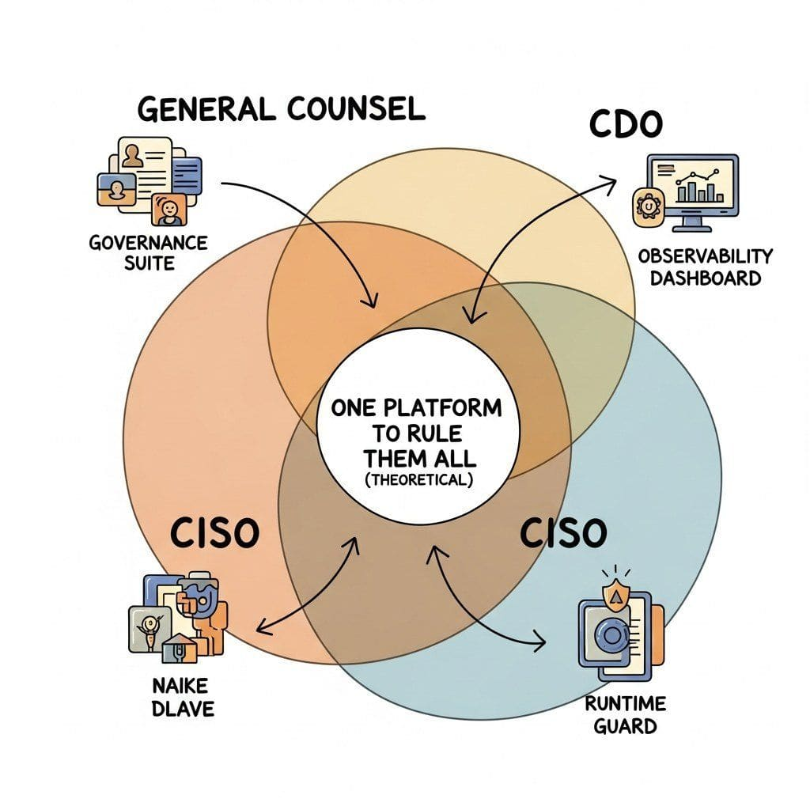

"A governance platform is a database of model risks pretending to be a moral compass; mine is licensed per seat and refreshes nightly."
Guard, Audit-Trail-Filing AI Agent
A "responsible AI platform" in 2026 is the opinionated environment in which an organization registers its AI use cases, runs bias and fairness evaluations, monitors models for drift and harm in production, and produces the documentation regulators ask for. The landscape splits five ways: enterprise governance suites (Credo AI, Holistic AI, Fairly AI, IBM watsonx.governance) that ingest model cards, risk classifications, and policy attestations into a single registry; cloud-provider governance bundles (Microsoft Responsible AI Dashboard, Google Vertex AI Model Governance, AWS Audit Manager for AI) that sit inside the hyperscaler you already pay; bias and explainability observatories (Fiddler AI, Arize Phoenix, Truera by Snowflake, WhyLabs) that focus on per-prediction fairness and drift; LLM-specific safety and monitoring runtimes (Arthur AI, Galileo Luna, Lakera Guard, Robust Intelligence) that focus on prompt-injection, hallucination, and toxicity in generative pipelines; and open-source / standards-aligned stacks (AIF360, Aequitas, Fairlearn deployments, NIST AI RMF tooling, EU AI Act compliance kits) that you self-host. Pick along three axes: governance-as-paperwork vs governance-as-monitoring, hyperscaler-aligned vs vendor-neutral, and predictive-ML-era vs LLM-era.
Prerequisites
This section assumes the bias-and-fairness vocabulary from Section 50.1, the LLM-safety framing from Section 49.1, and the model-card and audit-log patterns from Section 54.6.
The 2024-2026 inflection point for responsible AI platforms was regulation hitting production. The EU AI Act entered force in August 2024 with staggered compliance deadlines through 2027, the NIST AI Risk Management Framework's Generative AI Profile shipped in July 2024, ISO/IEC 42001 (AI Management Systems) became certifiable, and US state laws (Colorado SB 205, New York City Local Law 144) started actually fining non-compliant employers. The result: a platform layer that until 2023 was bought by curious teams now gets bought by Compliance, Legal, and Risk officers with budget authority. The platform decision is consequential because it shapes how your organization talks about AI risk: a Credo AI deployment teaches the org to think in registered use-cases and policy packs, an Arize Phoenix deployment teaches the org to think in dashboards and traces, and a Rasa-style "we built it ourselves with AIF360" stack teaches the org to think in code reviews.
56.1.1 Enterprise governance platforms

Governance platforms are the right default when the binding constraint is "we must show an auditor what we are doing with AI" rather than "we must catch a specific harm in real time". They centralize the model inventory, the risk classifications, the impact assessments, and the policy attestations that the EU AI Act, NIST AI RMF, and ISO/IEC 42001 all assume exist somewhere.
- Credo AI (Credo AI, 2020) is the category-defining AI governance platform, distinguished by an explicit policy-pack model that maps frameworks (EU AI Act, NIST AI RMF, NYC LL 144, Colorado SB 205, ISO 42001) to concrete artifacts each registered use case must produce. Its objective is to let a Chief AI Officer or VP of Risk run AI governance as a workflow (intake form, risk score, required evidence, sign-off) rather than as a spreadsheet, which matters when an enterprise has 50+ AI use cases and audit-trail completeness is the bottleneck. The core concept is the Use Case registry plus Policy Packs: each use case carries a risk tier (EU AI Act categories minimal / limited / high / unacceptable), and policy packs declare which evidence (bias test, model card, impact assessment, human oversight plan) must be attached before it can ship. Pick Credo AI when EU AI Act readiness or NIST AI RMF alignment is the explicit ask from a CISO/General Counsel and you have multiple business units producing AI use cases; avoid for a single ML team without that org-wide intake problem (the suite is overkill).
- Holistic AI (Holistic AI, 2018) is a London-based governance platform with an unusually deep bias-and-fairness library underpinning the compliance workflow, distinguished by per-jurisdiction compliance modules (NYC LL 144 bias audit, EU AI Act conformity assessment, Colorado AI Act risk classification). Its objective is to be the "audit-first" governance stack where the deliverable is a regulator-shaped report rather than a generic registry entry, which matters because NYC LL 144 (mandatory bias audits for hiring tools) and EU AI Act high-risk conformity assessments have specific output formats. The core concept is the Compliance Pipeline: dataset upload, automated bias suite, human-in-the-loop adjudication, signed report. Pick Holistic AI when you need to produce regulator-shaped audit reports (hiring tools under NYC LL 144 is the canonical use case); for broader governance Credo AI has wider category breadth.
- Fairly AI (Fairly AI, 2020) is a Canadian governance platform that historically focused on model-risk management for financial services (OSFI E-23, SR 11-7 lineage) and has expanded into general AI governance with a strong emphasis on automated evidence collection from MLOps pipelines. Its objective is to make governance an MLOps artifact rather than a parallel workflow, which matters when ML engineers refuse to maintain a separate "governance UI" alongside their training pipelines. Pick Fairly AI when financial-services model-risk-management lineage matters and when you want governance evidence auto-collected from your training jobs; for non-financial general governance, Credo AI's policy-pack abstraction is more flexible.
- IBM watsonx.governance (IBM, 2023; full GA 2024) is IBM's AI governance suite built from the merger of OpenPages (model risk), Watson OpenScale (monitoring), and AI FactSheets (documentation), bundled inside the watsonx product family. Its objective is to be the governance platform IBM customers already on Cloud Pak for Data or OpenPages can adopt without a new vendor relationship, which matters in regulated industries where IBM is the incumbent. The core concept is FactSheets (auto-generated lineage and metadata from training runs) plus OpenScale (drift and fairness monitoring) plus OpenPages (the GRC workflow). Pick watsonx.governance when IBM is already entrenched (banking, insurance, government) and the procurement gravity dominates; for greenfield, Credo AI and Holistic AI have lighter footprints.
- Microsoft Responsible AI Dashboard and Azure AI Content Safety Governance (Microsoft, 2022; AI Content Safety 2023; Purview AI Hub 2024) is Microsoft's bundle: the Responsible AI Dashboard in Azure ML (error analysis, fairness, interpretability, counterfactuals) for predictive ML, plus Azure AI Content Safety for LLM-output filtering, plus Purview AI Hub for cross-org governance of AI usage including ChatGPT and Copilot. Its objective is to be the Azure-native governance stack for shops already on Microsoft 365 and Azure ML, which matters when the bot is built on Azure OpenAI and the data lives in Microsoft 365. The core concept is the Responsible AI mlflow integration: a single API generates the Dashboard, FairLearn metrics, and the model card from any sklearn / PyTorch model. Pick the Microsoft stack when Azure is the platform of record; outside Azure the integration story falls apart and Credo AI is more portable.
- Google Vertex AI Model Governance and Gen AI Evaluation Service (Google, 2023-2024) is Google Cloud's governance stack: Vertex AI Model Registry for inventory, Vertex AI Model Monitoring for drift, the Gen AI Evaluation Service for LLM-specific bias and safety scoring, and Document AI Sensitive Data Protection for PII handling. Its objective is to be the GCP-native governance stack and the bridge between traditional ML governance and Gemini-era LLM evaluation. Pick when GCP and Gemini are your platforms; outside that the integration value evaporates.
- AWS Audit Manager (AI/ML frameworks) and SageMaker Clarify (AWS, 2020-2024) is the AWS bundle: SageMaker Clarify for bias detection and explainability, Audit Manager with prebuilt frameworks for NIST AI RMF and EU AI Act, AWS Config rules for AI resource compliance, and Bedrock Guardrails for runtime content filtering. Its objective is to give AWS customers a governance layer entirely inside their existing IAM, VPC, and CloudWatch, which matters when procurement is the binding constraint. Pick the AWS stack when AWS is the deployment platform; the components are competent but less integrated than Credo AI's purpose-built workflow.
- Dataiku Govern (Dataiku, 2021+) is the governance module inside Dataiku's data-science platform, distinguished by tight coupling to the project, model, and dataset registry of the broader Dataiku platform. Pick Dataiku Govern when Dataiku is already the team's data-science platform; for vendor-neutral governance over heterogeneous ML stacks, Credo AI or Holistic AI fit better.
56.1.2 Bias and explainability observatories
Observability platforms are the right default when the binding constraint is "catch a specific harm before it reaches users" rather than "produce a regulator-shaped report". They sit closer to MLOps than to GRC: per-prediction inspection, drift detection, fairness slices, root-cause analysis on a bad output.
- Fiddler AI (Fiddler, 2018; LLM Observability 2024) is the category-defining ML observability platform with deep bias-and-explainability focus, distinguished by counterfactual-style "what would the model have predicted if this feature changed" interrogation and a strong NLP/LLM module added in 2024. Its objective is to make every prediction explainable and every fairness violation traceable to a feature or population slice, which matters in regulated industries (credit, hiring, insurance) where "why did the model deny this person?" must be answerable. The core concept is the per-prediction explanation index plus the population-level fairness dashboard (group disparity metrics, intersectional slices). Pick Fiddler when fairness slicing on tabular models is the dominant use case, especially in finance and hiring; for pure-LLM observability the newer entrants (Arize Phoenix, Galileo) are LLM-native.
- Arize AI and Arize Phoenix (Arize, 2020; Phoenix 2023-2024) is the leading ML observability platform with an open-source LLM observability companion (Phoenix) that has effectively become the de facto OpenTelemetry-native LLM tracing tool. Its objective is to bring drift, performance, and fairness monitoring to both predictive ML and LLM applications under one schema, which matters when the same governance team must oversee both classes. The core concept is the Trace + Embedding + Evaluation triad: every LLM call becomes a span with attached embeddings, and evaluators (toxicity, hallucination, fairness) run as offline jobs against the trace store. Pick Arize Phoenix as the open-source default for LLM tracing in 2026; pick Arize Cloud when you want the managed version with fairness slicing and SLA monitoring.
- Truera (acquired by Snowflake, 2024) is the explainability-focused observability platform now embedded as Snowflake Cortex Observability and AI Observability, distinguished by its TruLens open-source LLM-evaluation library and a long history of SHAP-style attribution at scale. Its objective is to bring TruLens-style feedback functions (groundedness, answer relevance, harmful-content checks) and tabular SHAP attribution under one observability surface, which matters when your warehouse is Snowflake and you want governance inside the data platform. Pick Truera / Snowflake AI Observability when Snowflake is the data platform; outside Snowflake the open-source TruLens library is the right pick on its own.
- WhyLabs AI Observatory (WhyLabs, 2019) is an open-core observability platform built on the whylogs profiling library, distinguished by lightweight on-premises agents that profile data and predictions without exfiltrating raw data, plus LangKit (LLM-specific metrics) for generative monitoring. Its objective is to give regulated industries (healthcare, finance) an observability tool that respects data-residency constraints by never moving raw data off-prem, which matters when HIPAA or GDPR forbids sending production payloads to a SaaS. The core concept is the whylogs profile: a statistical sketch (histograms, frequent items, cardinality) computed locally and only the profile shipped to WhyLabs. Pick WhyLabs when data-residency is a hard constraint; for hosted observability with no data-residency restriction, Arize and Fiddler are stronger.
- Arthur AI and Arthur Shield (Arthur, 2018; Shield 2024) is a model performance monitoring platform whose 2024 Arthur Shield product is an LLM-specific firewall and observability layer (prompt-injection detection, hallucination scoring, PII leak detection, toxicity). Its objective is to wrap LLM applications with both inline guarding (Shield) and offline analysis (Arthur), which matters when the same vendor relationship covers protection and audit. Pick Arthur when LLM-specific runtime guarding plus model monitoring under one contract is the procurement story; for guarding alone Lakera Guard is more focused.
- Galileo Luna and Galileo Evaluate (Galileo, 2021; Luna 2024) is an LLM evaluation and observability platform whose 2024 Luna line introduced small, low-latency "evaluator models" specifically trained to score hallucination, context adherence, and toxicity faster and cheaper than GPT-4 judges. Its objective is to make per-call LLM evaluation cheap enough to run on every production response rather than offline samples, which matters at scale where GPT-4-as-judge is unaffordable. The core concept is the Luna evaluator suite (small specialized models for each metric) plus an observability dashboard that surfaces failed responses for review. Pick Galileo when per-call LLM evaluation cost is the bottleneck; for general observability Arize Phoenix has a broader open-source footprint.
- Lakera Guard (Lakera, 2021) is a specialized real-time LLM security and content firewall sitting at the prompt and response boundary, focused on prompt-injection detection, jailbreak resistance, PII leak prevention, and policy violation flagging. Its objective is to be the dedicated runtime safety wrapper (response time under 100ms) that any LLM application can drop in front of any LLM backend, which matters when production safety is the binding constraint and you want a managed answer rather than tuning your own guard models. Pick Lakera Guard when you need turnkey runtime LLM security with strong defaults; for self-hosted guard stacks the open-source Llama Guard route from Section 56.4 is the alternative.
- Robust Intelligence (acquired by Cisco, 2024) is the original "AI firewall and red-team" vendor, now part of Cisco's AI Defense offering, focused on adversarial testing (red-team-as-a-service), runtime protection, and continuous validation. Pick Robust Intelligence / Cisco AI Defense when the buying gravity is the CISO's security budget rather than the AI/ML governance budget, especially in Cisco-aligned enterprise stacks.
56.1.3 LLM-specific safety and policy runtimes
A category that barely existed before 2023: platforms whose primary job is "wrap an LLM application with policy enforcement at request and response time". They differ from observability platforms in being inline (synchronous, low-latency) rather than after-the-fact, and from governance platforms in being mechanical (rules and classifiers) rather than workflow-driven.
- NVIDIA NeMo Guardrails (NVIDIA, 2023; v0.10+ 2024) is the open-source policy runtime that introduced "Colang" (a domain-specific language for dialog policies) and remains the canonical reference for adding programmable rails to LLM apps. Its objective is to make "the bot must never recommend a competitor's product" or "the bot must always cite a source" expressible as a small rules file rather than buried in prompts, which matters when policy must be auditable as code. Pick NeMo Guardrails when you want code-as-policy and self-hosting; for managed runtime guarding the proprietary alternatives (Lakera Guard, Arthur Shield) are turnkey.
- AWS Bedrock Guardrails (AWS, 2024) is Bedrock's content-filtering layer applied to any Bedrock-hosted or Bedrock-routed model, with content categories (sexual, violent, hate, insults, misconduct), denied topics, PII redaction, and contextual grounding checks. Pick Bedrock Guardrails when AWS Bedrock is the inference layer; for non-Bedrock applications the layer does not apply.
- Azure AI Content Safety (Microsoft, 2023) is Azure's content moderation service with categories (hate, self-harm, sexual, violence), Prompt Shields (prompt-injection detection), Protected Material detection, and Groundedness detection. Pick Azure AI Content Safety when Azure is the platform; the API is callable from any application but the procurement gravity tilts Azure-shops toward it.
- OpenAI Moderation API (OpenAI, 2022; omni-moderation 2024) is OpenAI's free moderation endpoint scoring text and (in omni-moderation) images across harm categories. Its objective is to be the always-on, no-extra-cost first-line filter for OpenAI-mediated applications, which matters because it removes the cheapest excuse for not filtering. Pick the OpenAI Moderation API as the default filter for any OpenAI-stack application; pair with stronger guards (Llama Guard, Lakera) when stakes are higher.
- LLM Guard (ProtectAI, 2023) is an open-source security toolkit for LLM applications with input and output scanners (anonymization, ban substrings, deanonymization, prompt-injection detection, regex filters, toxicity, secrets). Its objective is to be the "compose any scanner you need" toolkit that runs entirely on your own infrastructure. Pick LLM Guard when self-hosted, composable scanners matter and you can curate the per-scanner thresholds yourself; for managed turnkey guards, Lakera is the alternative.
56.1.4 Open-source and standards-aligned stacks
Open-source platforms are the right default when self-hosting, vendor neutrality, or research transparency dominate. The trade is operational effort: you assemble what the commercial platforms ship as one button.
- AI Fairness 360 (AIF360) (IBM Research, 2018; now Linux Foundation AI & Data) is the canonical open-source fairness toolkit and the most cited foundation of academic fairness platforms, including 70+ bias metrics and 12+ mitigation algorithms (reweighing, prejudice remover, adversarial debiasing, calibrated equalized odds). Its objective is to give researchers and practitioners a uniform interface for the entire fairness literature, which matters when comparing techniques across papers. The platform layer here is the AIF360 dashboard plus the integration in Watson OpenScale and (downstream) Microsoft Responsible AI Dashboard. Pick AIF360 as the metric and algorithm library underlying any custom fairness platform; deeper details are in Section 56.2.
- Aequitas (Carnegie Mellon DSSG, 2018) is an open-source bias audit toolkit and a reference for policy-style fairness audits, distinguished by its "Bias Report" output designed for policymakers and journalists rather than only data scientists. Pick Aequitas when the audit deliverable should read like a policy report (group-by-group disparity tables, plain-language summaries); for embedding into MLOps, AIF360 and Fairlearn are more API-shaped.
- Fairlearn (Microsoft, 2018; Fairlearn 0.10 2024) is the open-source fairness toolkit underlying the Microsoft Responsible AI Dashboard and a strong choice for sklearn-based pipelines. Its objective is to make fairness assessment and mitigation a sklearn-compatible API (the Reductions approach trains a constrained classifier in any sklearn estimator). Pick Fairlearn when you want sklearn-shaped fairness and the Microsoft Responsible AI Dashboard integration; details in Section 56.2.
- Microsoft Counterfit (Microsoft, 2021) is an open-source command-line tool for adversarial ML testing, packaging attack frameworks (TextAttack, Adversarial Robustness Toolbox, Augly) under one MITRE-ATLAS-aligned CLI. Pick Counterfit when red-teaming traditional ML models is the use case; for LLM-specific red-teaming, the newer tools in Section 56.2 (PyRIT, garak) are LLM-shaped.
- NIST AI RMF Playbook and Crosswalks (NIST, 2023; Gen AI Profile 2024) is not a platform but the open reference framework most commercial platforms map their workflows onto. Its objective is to provide a vendor-neutral structure (Govern / Map / Measure / Manage) for AI risk management that organizations can implement in any tool. Pick the NIST framework as the spine of any home-grown governance program; the commercial platforms above all ship NIST AI RMF policy packs that operationalize it.
- Securiti AI Governance and OneTrust AI Governance (Securiti 2018; OneTrust 2016) are privacy-platform companies whose AI governance modules ride on top of existing privacy-management installations. Their objective is to extend the same data-protection-impact-assessment workflows DPOs already use to cover the EU AI Act's high-risk AI conformity assessment, which matters when the DPO and the AI governance owner are the same office. Pick Securiti or OneTrust when the existing GRC is the privacy platform; for AI-native governance, Credo AI and Holistic AI are purpose-built.
56.1.5 Mapping the landscape
56.1.6 Selection criteria and buyer personas
The platform choice maps to who in the organization is buying. The four buyer personas in 2026 and what each cares about:
- The General Counsel / Chief Risk Officer wants regulator-shaped reports, an auditable use-case inventory, and policy attestations. The right pick is a governance suite (Credo AI, Holistic AI, watsonx.governance) plus an attestation workflow. Observability dashboards do not solve this buyer's problem because regulators want narrative reports, not Grafana screenshots.
- The Chief Data Officer / VP of ML wants drift detection, fairness slicing on production traffic, and the ability to roll back a deployed model when a fairness regression appears. The right pick is an observability platform (Fiddler, Arize, WhyLabs) plus model-registry integration. Governance suites do not solve this buyer's problem because they sit upstream of the live model.
- The Chief Information Security Officer wants prompt-injection defense, data exfiltration detection, and runtime guarding of LLM outputs. The right pick is an LLM safety runtime (Lakera Guard, Arthur Shield, Robust Intelligence / Cisco AI Defense) plus SIEM integration. Governance suites and observability platforms do not solve this buyer's problem because they are not inline at request time.
- The ML researcher / fairness scientist wants reproducible metrics, transparent algorithms, and the ability to debug a fairness measurement. The right pick is the open-source stack (AIF360, Fairlearn, Aequitas) plus a notebook environment. Commercial platforms do not solve this buyer's problem because they hide the metric definitions behind UI abstractions.
The four-persona map collapses into four canonical platform choices. Let $P$ denote persona, $C$ the binding constraint, and $S$ the resulting shortlist. Then: $P_{\text{GC/CRO}} \to C = $ regulator-shaped paperwork $\to S = \{\text{Credo AI}, \text{Holistic AI}, \text{watsonx.governance}\}$; $P_{\text{CDO/VP-ML}} \to C = $ drift and fairness on production traffic $\to S = \{\text{Fiddler}, \text{Arize Phoenix}, \text{WhyLabs}\}$; $P_{\text{CISO}} \to C = $ inline runtime guarding (sub-200ms) $\to S = \{\text{Lakera Guard}, \text{Arthur Shield}, \text{Robust Intelligence / Cisco AI Defense}\}$; $P_{\text{researcher}} \to C = $ open, inspectable metrics $\to S = \{\text{AIF360}, \text{Fairlearn}, \text{Aequitas}\}$. Once persona is fixed, the shortlist follows almost mechanically; the consequential decision is identifying which persona actually owns the budget, not which vendor sits in the chosen bucket.
A common 2026 pattern is to run a governance suite (Credo AI or Holistic AI) for the registry-and-attestation layer plus an observability platform (Arize or Fiddler) for the runtime monitoring layer plus an LLM safety runtime (Lakera or Arthur Shield) at the prompt boundary. The three layers serve different audiences (auditor, on-call, security) and rarely consolidate into one product even though every vendor claims they could. Buyers who insist on "one platform to rule them all" usually end up with one weak governance suite and a homegrown observability stack on top; the better path is to budget for two or three categories and shop for the best fit in each.
The 2024-2026 wave of regulation (EU AI Act, NIST AI RMF, ISO 42001, NYC LL 144, Colorado SB 205) has consolidated the governance category around vendors with mature mappings to those frameworks. Procurement increasingly asks vendors "show me your EU AI Act conformity assessment template" as the first question; vendors who cannot produce one lose deals before they reach the technical evaluation. The result is that 2024-25 was a consolidation year (Truera acquired by Snowflake; Robust Intelligence by Cisco; Inflection's leadership by Microsoft) and 2026 is shaping up as a similar one. Plan for vendor turnover in your evaluation.
56.1.7 Pricing shapes
Responsible-AI platform pricing falls into four shapes, each with its own perverse incentive:
- Per-use-case licensing (Credo AI, Holistic AI, Fairly AI) charges per registered AI use case per year, sometimes with tiers by risk classification. Predictable but rewards under-registration: teams sometimes leave use cases unregistered to avoid the per-use-case fee, which defeats the governance goal.
- Per-prediction or per-trace pricing (most observability platforms; Arize, Fiddler, Galileo, WhyLabs) charges per monitored prediction or LLM call. Scales naturally with model usage; watch sampling rates (you do not need to monitor every single call at high traffic).
- Per-seat licensing (Microsoft Responsible AI Dashboard via Azure ML licensing, some governance suites) charges per platform user. Cheap when only a few governance officers use the platform; expensive when adoption succeeds and every ML team has a seat.
- Compute + open-source self-hosting (AIF360, Fairlearn, Phoenix self-hosted, NeMo Guardrails) is the most opaque but cheapest at scale: your engineering time plus your infrastructure bill. The right pick for research-heavy teams; the wrong pick for compliance-driven enterprises where vendor support is part of the value.
The most common pricing mistake is buying a per-use-case suite without asking "how many use cases will we register in two years?" Enterprises routinely register 100-500 use cases once governance is normalized, multiplying the year-one quote by 10-50x.
56.1.8 Platforms by vertical: a quick map
Different industries have converged on different platform defaults in 2026. The convergence is driven less by feature parity (the platforms differ less than vendors claim) and more by the specific regulator each vertical answers to: financial services align to the OCC/Federal Reserve SR 11-7 model-risk lineage, healthcare to HIPAA and FDA SaMD, HR-tech to NYC Local Law 144 and EEOC, EU enterprises across all verticals to the EU AI Act 2024/1689. The vendor that ships pre-built audit templates for your regulator usually wins the procurement even when its bias metrics are weaker.
- Financial services: Fairly AI (model-risk-management lineage), Credo AI (regulator-shaped reports), Fiddler (fairness slicing on credit-decision models), IBM watsonx.governance (incumbent in big banks). Lakera Guard or Arthur Shield for LLM-driven customer-facing chat. JPMorgan Chase's 2024 internal "LLM Suite" governance reportedly runs on a watsonx-plus-internal-registry combination, which is representative of the big-bank pattern.
- Healthcare: Microsoft Responsible AI Dashboard (Azure + HIPAA-eligible), Vertex AI Model Governance (GCP + HIPAA), watsonx.governance (IBM-aligned hospitals), WhyLabs (data-residency: profile data on-prem, never ship raw payloads). Epic's Cosmos data platform and its 2024 partnership with Microsoft for ambient documentation make Azure Responsible AI the path-of-least-resistance for the roughly 250M-patient Epic-using US hospital systems.
- Insurance: Fiddler (per-prediction explanations for claims), Holistic AI (jurisdiction-specific compliance modules), Credo AI (multi-state US regulation), IBM OpenScale / watsonx.governance. Colorado SB21-169 and the 2023 NAIC Model Bulletin on AI in insurance underwriting created a wave of new disclosure requirements that Fiddler and Holistic AI shipped templates for in 2024.
- HR-tech and hiring: Holistic AI (NYC LL 144 audit modules are flagship), Credo AI (broader governance), Aequitas (open-source audit-report style favored by job-applicant-protection advocates). NYC Local Law 144 (in force July 2023) requires a bias audit by an independent auditor for any automated employment decision tool used in NYC; Holistic AI was the first major platform to publish a turnkey LL 144 audit pipeline.
- Government and public sector: Microsoft Responsible AI Dashboard (Azure Government), Vertex AI (Google Cloud government), Credo AI (NIST RMF policy packs), open-source self-hosted (AIF360 + Fairlearn) for budget-constrained agencies. OMB Memorandum M-24-10 (March 2024) made NIST AI RMF crosswalks a requirement for US federal agency AI use cases, which Credo AI and the cloud-provider bundles all ship templates for.
- Tech platforms with consumer-facing LLMs: Lakera Guard / Arthur Shield / OpenAI Moderation API as the runtime guard, Arize Phoenix or Galileo for the offline trace store, internal governance often built on Credo AI or a homegrown registry. Discord's published 2024 Trust & Safety architecture (a mixture of Perspective API, OpenAI Moderation, and homegrown classifiers) is the public reference implementation in this category.
- EU-headquartered enterprises across verticals: Holistic AI (London-based, EU AI Act focus) and Credo AI (deep EU AI Act tooling) compete most directly; the cloud-provider bundles (Azure RAI, Vertex AI Governance) are also EU AI Act-aligned but tie you to a hyperscaler. With Article 6 high-risk obligations entering full force on 2 August 2026, EU enterprises have been front-loading platform purchases through 2025-2026.
56.1.9 Platform evaluation checklist
The questions to ask during evaluation that surface lock-in, capability gaps, and compliance fit:
- EU AI Act conformity assessment template: does the vendor ship a template, and is it accepted by your notified body if applicable?
- NIST AI RMF crosswalk: can the vendor produce a NIST AI RMF Govern/Map/Measure/Manage coverage matrix for their feature set?
- Use-case export: can you export the registered use cases in an open format (JSON, OSCAL) for migration or audit, or only as PDFs?
- Bias-test transparency: are the bias metrics computed by code you can inspect (AIF360 fork, Fairlearn) or are they vendor-proprietary?
- LLM-specific evaluations: does the platform run bias/toxicity/hallucination evaluations on LLM outputs, or is its model only predictive ML?
- Inline vs offline mode: can the platform sit inline (sub-200ms) for runtime guarding, or only offline for post-hoc analysis?
- Data residency: can the vendor deploy on-prem, in a customer-controlled VPC, or only as a SaaS in a vendor-controlled region?
- Integration with your MLOps: does the platform read your model registry (MLflow, Vertex AI Model Registry, SageMaker Model Registry) natively, or does it require a parallel registry?
- Audit log retention: how long are governance actions retained, and can they be exfiltrated to your SIEM?
- Vendor stability: is the vendor independent, acquired, or owned by a hyperscaler? Has the product roadmap shifted post-acquisition? (Truera-by-Snowflake and Robust-Intelligence-by-Cisco are recent examples to study.)
A team that asks these questions usually picks a different platform than a team that picks based on the demo video alone.
A G-SIB bank in 2024-2025 ran a procurement covering 300+ AI use cases (credit, fraud, customer service, internal HR tooling). The team evaluated single-vendor stacks (IBM watsonx.governance, Dataiku Govern + Snowflake AI Observability) versus a best-of-breed combination. They picked Credo AI for the registry and policy-pack layer (EU AI Act and SR 11-7 packs were decisive), Fiddler for fairness slicing on credit-decision and pricing models (the model-risk-management team already used Fiddler and the per-prediction explanations met SR 11-7 expectations), and Lakera Guard at the boundary of the customer-facing chatbot (prompt-injection defense plus PII leak prevention). The deciding factor against single-vendor was the per-use-case licensing math: a single-vendor stack rolled in features the bank did not need, and three separate vendors negotiated against each other on price. This three-vendor pattern is now common in tier-1 financial-services governance.
These three terms collapse the same way they did in the conversational AI tooling section. A platform ships an opinionated authoring UI plus hosting (Credo AI, Holistic AI, Arize, Fiddler). A framework ships code libraries you run yourself (AIF360, Fairlearn, NeMo Guardrails, LLM Guard). An API ships only an endpoint (OpenAI Moderation, Azure AI Content Safety, AWS Bedrock Guardrails). Most production deployments combine layers: a governance platform like Credo AI consumes evidence generated by self-hosted Fairlearn, deployed alongside Lakera Guard as the runtime safety wrapper. The platform-vs-framework column in vendor comparisons matters more than the "AI capability" column for the first six months of a governance program.
The EU AI Act fine structure under Article 99 is tiered. For prohibited-practice violations (Annex III high-risk noncompliance and ban infringements), the fine is the higher of $\textsc{EUR}\,35\text{M}$ or $7\%$ of total worldwide annual turnover from the preceding financial year, i.e. $F_{\max} = \max(35\,\text{M}, 0.07 \cdot T)$. For other high-risk noncompliance the cap is $\max(15\,\text{M}, 0.03 \cdot T)$; for supplying incorrect information to authorities, $\max(7.5\,\text{M}, 0.015 \cdot T)$. Worked example: for a hyperscaler with $T = \textsc{EUR}\,200\text{B}$ annual turnover deploying a prohibited social-scoring system, $F_{\max} = \max(35\,\text{M}, 0.07 \cdot 200\,\text{B}) = \max(35\,\text{M}, 14\,\text{B}) = \textsc{EUR}\,14\,\text{B}$, roughly 400x the floor. For a mid-market SaaS at $T = \textsc{EUR}\,100\text{M}$, $F_{\max} = \max(35\,\text{M}, 7\,\text{M}) = \textsc{EUR}\,35\,\text{M}$, where the absolute floor dominates. SMEs and startups benefit from a proportionality clause that caps the fine at the lower of the two figures, inverting the formula. This asymmetry is why governance-suite procurement gravity from large enterprises diverges from SME tooling: the expected-loss term in the buy-vs-build decision differs by orders of magnitude.
Unlike a chatbot platform where switching costs are mostly redoing a few flows, switching governance platforms means re-attesting hundreds of use cases against a different schema, replaying years of audit history into a new format, and convincing regulators who already saw your previous reports that the new ones are equivalent. The lock-in is highest for closed-format governance suites (Credo AI, Holistic AI) and lowest for NIST AI RMF-aligned stacks deployed on top of generic GRC tools. Ask explicitly during evaluation: "if we leave in three years, what evidence ships out in an open format and what would we re-collect?"
What's Next?
In the next section, Section 56.2: Libraries and Frameworks, we build on the material covered here.